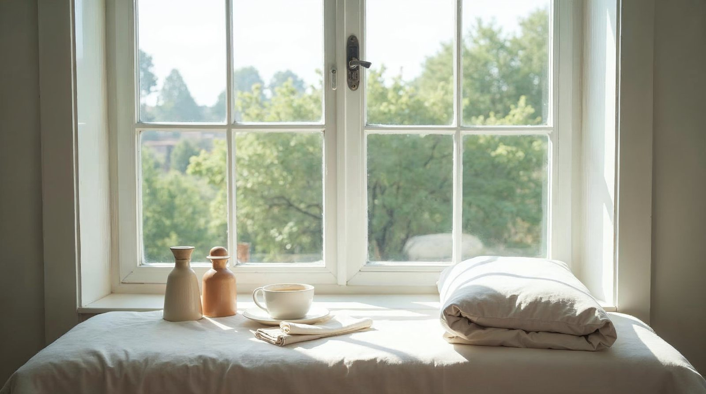
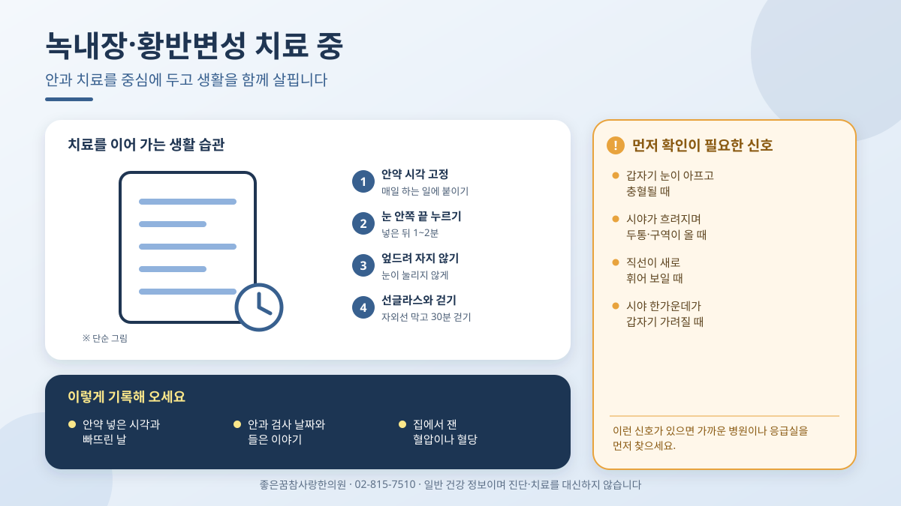

이종호 한의사 감수좋은꿈참사랑한의원 대표원장 (한의사 면허번호 19769)발행 2026-11-26 · 수정 2026-11-26
이 글의 차례
저녁 식탁을 치우고 나서 작은 안약병을 꺼냅니다. 고개를 젖히고 한 방울, 눈을 감고 눈 안쪽 끝을 손가락으로 가만히 누릅니다. 하루 몇 번 되풀이하는 이 일이 몇 년째 이어지고 있습니다. 안과에서는 잘 유지되고 있다고 하는데, 마음 한구석에는 늘 '언젠가 더 나빠지면 어쩌나' 하는 걱정이 남아 있습니다.
녹내장이나 황반변성으로 치료를 받고 계신 분들은 진료실에서 이런 질문을 자주 하십니다. "안과 치료 말고 제가 할 수 있는 건 없을까요?" 그 마음을 잘 압니다. 눈은 하루 종일 쓰는 기관이고, 잃고 싶지 않은 감각이니까요.
먼저 분명히 말씀드리고 싶은 것이 있습니다. 녹내장과 황반변성은 안과에서 정기적으로 검사하고 치료를 이어 가는 것이 가장 중심입니다. 한의원 진료는 그 치료를 대신하지 않습니다. 다만 치료를 이어 가는 동안의 잠, 긴장, 혈압과 혈당, 눈 피로 같은 생활의 바탕을 함께 살필 수 있습니다.
이 글에서는 두 병이 어떻게 다른지, 안약과 주사 치료를 잘 이어 가는 요령, 생활 속에서 챙길 것들, 그리고 한의원에서 함께 살피는 부분을 차례로 정리했습니다.
녹내장은 어떤 병인가요
녹내장은 눈에서 받아들인 빛 정보를 뇌로 보내는 시신경이 조금씩 손상되는 병입니다. 눈 안의 압력, 즉 안압이 시신경을 누르는 것이 중요한 원인이지만, 안압이 정상 범위인데도 생기는 정상안압 녹내장도 우리나라에서 흔합니다.
녹내장의 어려운 점은 초기에 거의 느낌이 없다는 것입니다. 시야의 가장자리부터 조금씩 좁아지는데, 두 눈이 서로 빈자리를 채워 주기 때문에 스스로는 알아차리기 어렵습니다. 그래서 건강검진이나 안과 검사에서 우연히 발견되는 경우가 많습니다.
한번 손상된 시신경은 되돌리기 어렵기 때문에, 치료의 목표는 남아 있는 시야를 지키는 것입니다. 안약으로 안압을 낮추는 것이 기본이고, 필요하면 레이저나 수술을 함께 고려합니다.
황반변성은 어떤 병인가요
황반은 눈 안쪽 망막의 한가운데, 글자를 읽고 얼굴을 알아보는 섬세한 시력을 맡는 작은 부분입니다. 황반변성은 나이가 들면서 이 부분에 노폐물이 쌓이거나 비정상적인 혈관이 자라면서 중심 시력이 흐려지는 병입니다.
황반변성은 크게 건성과 습성으로 나눕니다. 건성은 천천히 진행하는 편이고, 습성은 새로 자란 혈관에서 피나 물이 새어 나와 비교적 빠르게 시력이 떨어질 수 있습니다. 습성은 눈 안에 주사를 정기적으로 맞는 치료를 이어 가는 경우가 많습니다.
황반변성에서 흔한 신호는 직선이 휘어 보이거나, 글자 한가운데가 비어 보이거나, 사물의 크기가 달라 보이는 것입니다. 녹내장이 가장자리부터 좁아진다면, 황반변성은 한가운데부터 흐려진다고 기억해 두시면 구분에 도움이 됩니다. 두 병이 한 사람에게 함께 있는 경우도 있어, 어느 쪽인지는 안과 검사로 확인하게 됩니다.
왜 치료를 잘 이어 가는 것이 가장 중요할까요
두 병 모두 천천히, 오랜 기간에 걸쳐 진행하는 병입니다. 하루 이틀 안약을 빼먹는다고 바로 눈에 띄는 변화가 오지는 않지만, 그런 날이 쌓이면 안압이 흔들리고 시신경은 조금씩 손상을 입을 수 있습니다.
황반변성 주사 치료도 정해진 간격이 중요합니다. 간격이 길어지면 새는 혈관이 다시 활발해질 수 있어, 안과에서 정한 일정대로 맞는 것이 시력을 지키는 데 큰 몫을 합니다.
문제는 이 치료가 길다는 데 있습니다. 눈에 불편이 없으니 안약을 잊기 쉽고, 몇 년이 지나면 지치기도 합니다. 그래서 저는 치료 자체보다 '치료를 이어 가는 생활'을 함께 살피는 것을 중요하게 생각합니다. 한의학에서는 눈을 간과 신의 기운과 연결해 보고, 오래 쓰고 지친 눈을 몸 전체의 피로와 함께 살핍니다.
안약을 잘 넣는 요령
안약을 넣을 때는 손을 깨끗이 씻고, 고개를 뒤로 젖혀 아래 눈꺼풀을 살짝 당긴 뒤 한 방울만 떨어뜨립니다. 두세 방울을 넣어도 눈에 머무는 양은 한 방울 정도여서 나머지는 흘러내립니다.
넣은 뒤에는 눈을 감고 눈 안쪽 끝, 코 옆 오목한 자리를 1~2분 가볍게 누르고 있으면 약이 코로 빠져나가는 것을 줄여 눈에 더 오래 머물게 됩니다. 눈을 깜빡이면 약이 빠져나가니 감고 있는 편이 좋습니다.
안약을 두 가지 이상 쓰신다면 사이에 5분 정도 간격을 두세요. 바로 이어서 넣으면 먼저 넣은 약이 씻겨 나갈 수 있습니다. 안약을 넣는 시각을 식사나 양치처럼 매일 하는 일에 붙여 두면 잊는 날이 줄어듭니다.
생활 속에서 함께 챙길 것들은 무엇인가요?
녹내장은 혈류와 관련이 있어서, 혈압이 너무 높거나 너무 낮은 것 모두 신경 써야 합니다. 특히 밤에 혈압이 많이 떨어지는 분은 시신경으로 가는 피가 줄어들 수 있어, 혈압약을 드신다면 복용 시각을 안과와 내과 선생님께 함께 알려 두시는 것이 좋습니다.
당뇨가 있는 분은 혈당 관리가 눈 건강과 직접 연결됩니다. 혈당이 흔들리면 망막 혈관도 영향을 받기 때문입니다. 내과에서 혈당 관리를 꾸준히 하시는 것이 안과 치료와 같은 방향을 향합니다.
황반변성은 담배와 관련이 깊다고 알려져 있습니다. 담배를 피우신다면 끊는 것이 눈을 위해 할 수 있는 가장 큰 일 가운데 하나입니다. 녹색 잎채소, 생선, 색이 진한 채소와 과일을 골고루 드시는 식사도 도움이 됩니다.
잠자리와 자세도 눈과 연결됩니다
녹내장이 있는 분은 엎드려 자거나 한쪽 눈을 베개에 눌러 자는 자세를 피하시는 것이 좋습니다. 눈을 누르는 자세가 안압에 영향을 줄 수 있기 때문입니다. 바로 누워 자거나, 옆으로 눕더라도 눈이 눌리지 않게 베개 높이를 맞춰 보세요.
머리를 아래로 오래 숙이는 자세, 물구나무서기 같은 운동, 숨을 참고 힘을 세게 주는 무거운 운동은 안압을 순간적으로 올릴 수 있습니다. 운동을 하신다면 걷기나 가벼운 자전거처럼 숨을 고르게 쉬는 운동을 권합니다.
넥타이나 옷깃을 꽉 조이는 것, 관악기를 오래 부는 것도 안압과 관련이 있다는 이야기가 있습니다. 해당되는 분은 안과 선생님께 한번 여쭤 보시면 좋습니다.

눈 피로와 긴장을 함께 돌보기
안약을 오래 쓰다 보면 눈이 뻑뻑하고 따가운 느낌이 함께 오는 분이 많습니다. 안약의 보존제가 눈 표면을 자극하기도 하고, 나이가 들며 눈물이 줄어드는 것도 겹칩니다. 이런 불편이 있다면 안과에 알려 보존제가 없는 안약으로 바꿀 수 있는지 상의해 보세요.
화면을 오래 보는 날에는 20분마다 20초쯤 먼 곳을 바라보며 눈을 쉬게 해 주세요. 의식적으로 눈을 천천히 깜빡이는 것만으로도 눈 표면이 촉촉해집니다. 따뜻한 수건을 감은 눈 위에 올려 두는 것도 피로를 덜어 줍니다.
눈이 지치면 목과 어깨도 함께 굳습니다. 화면을 볼 때 고개가 앞으로 나가 있지 않은지, 어깨가 귀 쪽으로 올라가 있지 않은지 틈틈이 확인해 보세요. 한 시간에 한 번쯤 일어나 어깨를 크게 돌리고 목을 천천히 좌우로 기울이는 것만으로도 눈과 머리가 한결 가벼워집니다.
가족이 함께 알아 두면 좋은 것
녹내장은 가족 가운데 같은 병을 앓는 분이 있으면 생길 가능성이 높아진다고 알려져 있습니다. 부모님이나 형제가 녹내장 진단을 받았다면, 아직 불편이 없더라도 안과에서 한 번 검사를 받아 보시길 권합니다.
어르신이 안약을 넣으실 때 손이 떨리거나 방울이 눈에 잘 들어가지 않는 경우가 있습니다. 가족이 안약 넣는 모습을 한 번 지켜봐 드리고, 필요하면 안약 넣는 보조 도구를 함께 찾아 드리면 치료를 이어 가는 데 큰 힘이 됩니다.
시야가 좁아진 분은 운전, 계단, 붐비는 길에서 부딪히기 쉽습니다. 함께 걸을 때는 반 걸음 앞에서 길을 살펴 드리고, 운전을 계속해도 되는지는 안과 선생님과 상의해 정하시도록 도와주세요.
먼저 이렇게 여쭙니다
처음 오시면 대략 이런 순서로 여쭙니다. 미리 정리해 오시면 이야기가 훨씬 수월합니다.
- 어떤 진단을 언제 받으셨고, 지금 쓰시는 안약이나 주사 치료는 무엇인가요?
- 다음 안과 예약일과 최근 검사에서 들은 이야기는 무엇인가요?
- 혈압, 당뇨, 고지혈증 같은 병이 함께 있나요?
- 잠은 몇 시간 주무시고, 깊이 주무시나요?
- 화면을 보는 시간과 바깥 활동 시간은 어느 정도인가요?
- 눈이 뻑뻑하거나 피곤한 느낌, 목과 어깨의 굳음이 있나요?
치료를 이어 가며 마음이 어떠신지도 여쭙니다. 시력을 잃을지 모른다는 걱정은 생각보다 큰 짐이 되고, 그 걱정이 잠을 얕게 만들기도 합니다. 그 마음을 함께 나누는 것도 진료의 한 부분이라고 생각합니다.
일상에서 먼저 해 볼 수 있는 것
치료를 이어 가는 생활은 작은 습관들이 모여 만들어집니다. 한꺼번에 바꾸기보다 하나씩 더해 보세요.
- 안약 넣는 시각을 매일 하는 일에 붙여 두기
- 안약 일정과 안과 예약일을 달력에 적어 두기
- 바깥에서는 자외선 차단 선글라스와 챙 있는 모자 쓰기
- 잠드는 시각을 일정하게, 엎드려 자지 않기
- 하루 30분 안팎 걷기
- 담배를 피우신다면 끊는 계획 세우기
황반변성이 있는 분은 한쪽 눈씩 가려 가며 바둑판 모양의 격자를 보는 자가 확인을 안과에서 안내받으셨을 수 있습니다. 안내받은 방법대로 정해진 간격에 확인하고, 선이 새로 휘어 보이면 예약일을 기다리지 말고 안과에 연락하세요.
집 안 조명은 밝고 고르게 해 주시면 좋습니다. 시야가 좁아지거나 중심이 흐린 분은 계단과 문턱에서 넘어지기 쉬우니, 발밑을 밝히는 작은 등을 두고 바닥에 걸리는 물건을 치워 두세요.
한의원에서 함께 살필 수 있는 경우
- 안과 치료를 이어 가면서 눈 피로와 뻑뻑함이 늘 함께 있는 경우
- 혈압이나 혈당이 흔들리고 잠이 얕은 경우
- 시력 걱정으로 마음이 쫓기고 잠을 설치는 경우
- 눈을 많이 쓰고 나면 목, 어깨, 머리가 함께 무거운 경우
좋은꿈참사랑한의원에서는 먼저 아래 '먼저 확인이 필요한' 신호가 없는지부터 봅니다. 그다음 맥과 혀, 혈압, 잠과 소화, 목과 어깨의 긴장을 살펴, 안과 치료를 이어 가는 동안 몸 전체가 어떤 상태인지 함께 정리합니다.
진찰한 내용을 바탕으로 생활에서 바꿔 볼 것 하나와 함께 침, 목과 어깨의 긴장을 푸는 관리, 한약 상담 가운데 지금 상태에 맞는 것을 정합니다. 한약을 상의할 때는 안약과 드시는 약을 모두 확인하고 신중히 정합니다.
안과에서 처방받은 안약과 주사 치료는 정해진 대로 이어 가시고, 멈추거나 간격을 바꾸는 일은 안과 선생님과 상의하세요. 한의원 진료는 안과 치료와 나란히, 그 치료를 이어 가는 몸과 마음을 함께 돌보는 자리입니다.
이렇게 기록해 오시면 상담이 쉬워집니다
치료가 길어질수록 기록이 든든한 길잡이가 됩니다. 간단히 적어 두세요.
- 안약을 넣은 시각과 빠뜨린 날
- 안과 검사 날짜와 들은 이야기(안압, 시야, 주사 일정)
- 집에서 잰 혈압이나 혈당
- 잠든 시각과 깬 시각, 밤에 깬 횟수
- 눈이 유난히 피곤했던 날과 그날 한 일
이 기록을 안과와 내과, 한의원에 함께 보여 주시면 각자 맡은 부분을 더 정확히 살필 수 있습니다. 기록은 치료를 이어 가는 나 자신에게도 '잘하고 있다'는 확인이 되어 줍니다.
오래 함께 가는 눈을 위해
녹내장과 황반변성은 긴 시간 함께 가는 병입니다. 치료를 꾸준히 이어 가는 것만으로도 이미 가장 중요한 일을 하고 계신 것입니다. 그 위에 잠과 걷기, 자외선 차단 같은 작은 습관을 하나씩 더하면 됩니다.
이번 주에는 안약 넣는 시각을 하루 일과 하나에 붙여 두는 것부터 시작해 보세요. 다음에 오시면 안약 기록과 잠 기록부터 함께 펼쳐 보겠습니다. 걱정은 혼자 안고 있을 때 더 커집니다. 안과와 한의원, 가족이 함께 곁에 있다는 것을 기억해 주세요.
이런 증상은 먼저 확인이 필요합니다
- 갑자기 눈이 심하게 아프고 충혈되며 시야가 흐려지고 두통과 구역이 함께 오는 경우
- 직선이 새로 휘어 보이거나 시야 한가운데나 한쪽이 갑자기 가려 보이는 경우
이런 신호가 있으면 한의원보다 가까운 병원이나 응급실을 먼저 찾으세요.
함께 읽으면 좋은 글
- 눈이 뻑뻑하고 모래가 들어간 듯 따갑거나 쉽게 피로한 안구건조증은 어떻게 살피나요?
- 눈앞에 날파리나 실 같은 것이 떠다니는 비문증은 무엇이고 어떻게 살피나요?
- 눈을 많이 쓴 날 눈이 무겁고 이마와 관자놀이까지 아파 오는 안정피로 두통은 어떻게 살피나요?
- 고혈압 약을 먹고 있을 때 한의원 진료와 생활 관리는 어떻게 함께 살피나요?
- 당뇨 약을 먹고 있을 때 식사·움직임·잠과 한의원 진료는 어떻게 함께 살피나요?

여쭙는 것
- 어떤 진단을 언제 받으셨고, 지금 쓰시는 안약이나 주사 치료는 무엇인가요?
- 다음 안과 예약일과 최근 검사에서 들은 이야기는 무엇인가요?
- 혈압, 당뇨, 고지혈증 같은 병이 함께 있나요?
생활에서 해 볼 것
- 안약 넣는 시각을 매일 하는 일에 붙여 두기
- 안약 일정과 안과 예약일을 달력에 적어 두기
- 바깥에서는 자외선 차단 선글라스와 챙 있는 모자 쓰기
한의원에서 함께 살필 것
- 안과 치료를 이어 가면서 눈 피로와 뻑뻑함이 늘 함께 있는 경우
- 혈압이나 혈당이 흔들리고 잠이 얕은 경우
- 시력 걱정으로 마음이 쫓기고 잠을 설치는 경우
먼저 확인이 필요한 신호
- 갑자기 눈이 심하게 아프고 충혈되며 시야가 흐려지고 두통과 구역이 함께 오는 경우
- 직선이 새로 휘어 보이거나 시야 한가운데나 한쪽이 갑자기 가려 보이는 경우
한눈에 보는 표
| 구분 | 핵심 |
|---|---|
| 여쭙는 것 | 어떤 진단을 언제 받으셨고, 지금 쓰시는 안약이나 주사 치료는 무엇인가요? 다음 안과 예약일과 최근 검사에서 들은 이야기는 무엇인가요? |
| 생활에서 해 볼 것 | 안약 넣는 시각을 매일 하는 일에 붙여 두기 안약 일정과 안과 예약일을 달력에 적어 두기 |
| 한의원에서 함께 살필 것 | 안과 치료를 이어 가면서 눈 피로와 뻑뻑함이 늘 함께 있는 경우 혈압이나 혈당이 흔들리고 잠이 얕은 경우 |
| 먼저 확인이 필요한 신호 | 갑자기 눈이 심하게 아프고 충혈되며 시야가 흐려지고 두통과 구역이 함께 오는 경우 직선이 새로 휘어 보이거나 시야 한가운데나 한쪽이 갑자기 가려 보이는 경우 |
자주 묻는 질문
녹내장 안약을 넣는 중에 침 치료를 받아도 되나요?
쓰시는 안약과 드시는 약을 알려 주시면 그에 맞춰 진료 방향을 정합니다. 안약은 안과 처방대로 이어 가시면 됩니다.
황반변성 주사 치료 중에 한약을 먹어도 되나요?
드시는 약을 모두 확인하고 신중하게 정합니다. 주사 일정은 안과에서 정한 대로 이어 가시고, 약 목록을 가져와 주세요.
눈에 좋다는 영양제를 먹으면 안과 치료를 줄여도 되나요?
영양제는 안과 치료를 대신하지 않습니다. 안약과 주사 치료는 안과 선생님과 상의 없이 줄이거나 멈추지 않으시길 권합니다.
녹내장이 있으면 운동은 어떻게 하나요?
걷기나 가벼운 자전거처럼 숨을 고르게 쉬는 운동이 좋습니다. 머리를 오래 숙이거나 숨을 참고 힘을 세게 주는 운동은 안과 선생님과 먼저 상의해 보세요.
커피는 마셔도 되나요?
보통 한두 잔은 괜찮다고 보는 경우가 많지만, 한꺼번에 많은 양의 물이나 커피를 마시는 것은 피하시는 편이 좋습니다. 궁금하시면 안과에서도 함께 여쭤 보세요.
좋은꿈참사랑한의원은 재진 때 지난번 이야기부터 이어서 여쭙니다. 진료시간과 예약은 오시는 길에서 확인하세요.
어디서 상담받을 수 있나요?
좋은꿈참사랑한의원은 서울 동작구 만양로2길 2 신성빌딩 3층·5층(서울 동작구 상도동, 7호선 상도역 3번 출구 근처)에 있습니다. 한의사 3명(이종호 대표원장, 조영기 수석진료원장, 정원영 진료원장)이 진료합니다. 진료시간은 평일 09:30~20:00(점심 13:00~14:00), 토·일·공휴일 09:30~15:00이며, 방문 전 전화로 확인을 권합니다. 예약은 네이버 예약, 카카오톡 상담, 전화 02-815-7510로 받습니다.
이 글은 일반적인 건강 정보이며 개인의 진단이나 치료를 대신하지 않습니다. 증상이 있거나 복용 중인 약이 있다면 진료를 통해 확인하세요. 치료 효과는 개인마다 다를 수 있습니다.
작성 기준: 일반적으로 알려져 있는 건강 정보를 참고해 정리했습니다(대표원장 감수). 증상 기록은 1~2주 동안 하루 1회, 비슷한 시간에 적어 오시면 지난 상태와 비교하기 쉽습니다.